DATASCI 350 - GitHub Tutorial
Introduction
This tutorial gets you set up with GitHub: a free educational account, GitHub Desktop installed, a copy of the course materials on your computer, and the routine for keeping that copy up to date. It also covers the basics of Git along the way, including commits and pushes. The tutorial uses GitHub Desktop throughout, but any Git client will do the same job if you already have one you prefer.
What are Git and GitHub?
Git is a version control system. It records every change you make to a set of files, so you can see what changed, when, and why, and go back to any earlier state. Linus Torvalds wrote it in 2005 to manage the Linux kernel, and it is now the de facto standard for the job. Git is also famously hard to learn, which is where GitHub comes in.
GitHub hosts Git repositories on the web. It stores your project in the cloud, keeps every version, and lets several people work on the same files without overwriting each other. It adds issue tracking, project management, and free website hosting on top. Microsoft, Google, and Meta all keep code there1, as does almost every open-source project. Think of it as a social network for people who write code.
We use GitHub throughout this course, so it is worth getting comfortable with it. Both public and private repositories are free for students.
Setting up
Create a GitHub account
Go to https://github.com/ and sign up, using the button in the top right. Use your Emory email address, which qualifies you for the educational account described below. Choose your username carefully, as it is public and it will follow you.
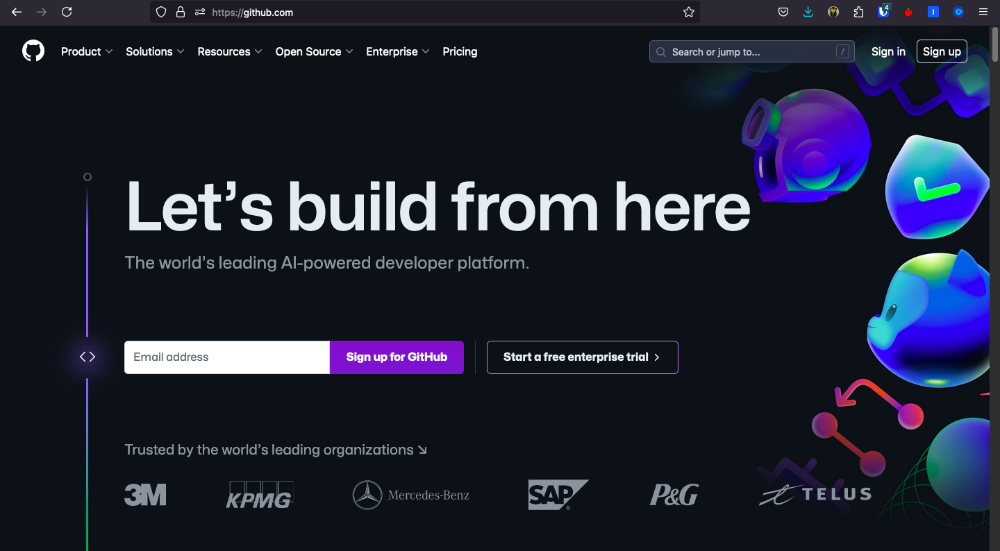
Apply to GitHub Education
Go to https://github.com/education and apply for the Student Developer Pack. It gives you a set of paid tools for free, including GitHub Copilot, a domain name, and cloud hosting credit. Click “Join GitHub Education” and follow the instructions. You will need proof of your student status, such as an ID card or a transcript.
Install GitHub Desktop
Download GitHub Desktop from https://desktop.github.com/. It is a graphical interface to Git for Windows and macOS, and it is the tool this tutorial uses. The command line does the same things, and you are welcome to use it instead.
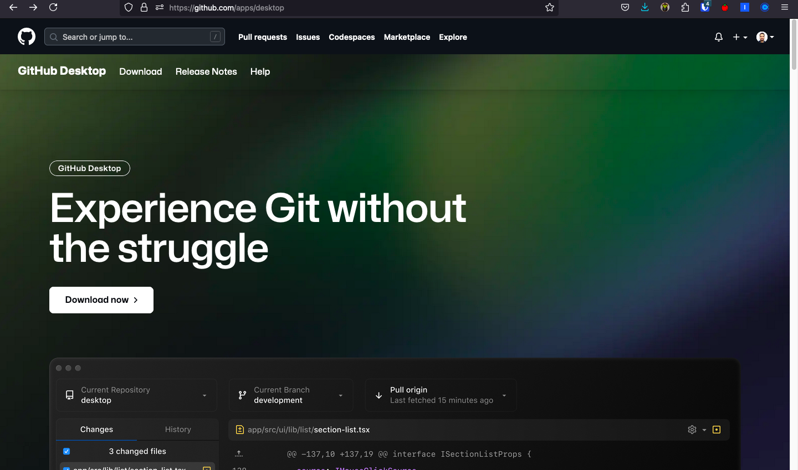
Open GitHub Desktop. Sign in with your GitHub account. You should then see this screen:
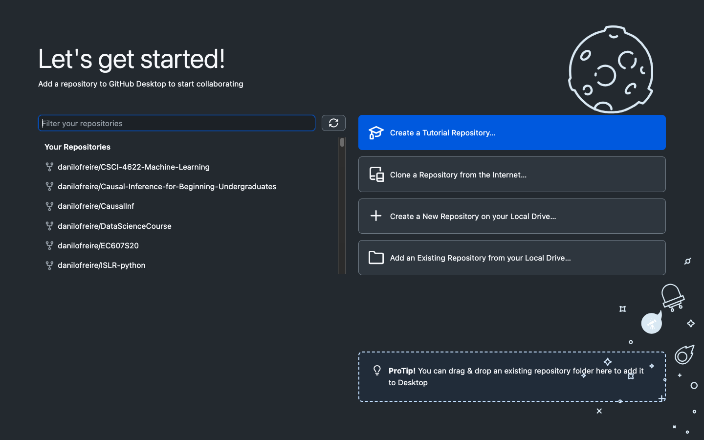
Getting the course materials
Fork the repository
The course materials live at https://github.com/danilofreire/datasci350. You will make your own copy, called a fork, so that you can annotate and change the files without touching mine.
Open the repository page. Click “Fork” in the top right corner.
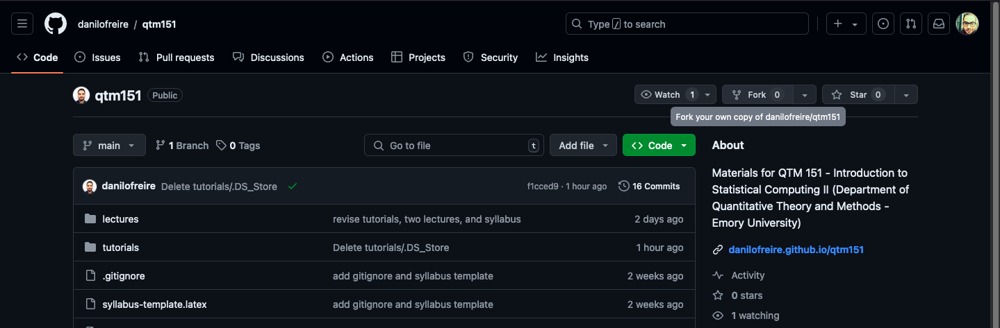
GitHub asks you to name your copy. Any name works, but datasci350 keeps it consistent with the instructions in these tutorials. Click “Create fork”.
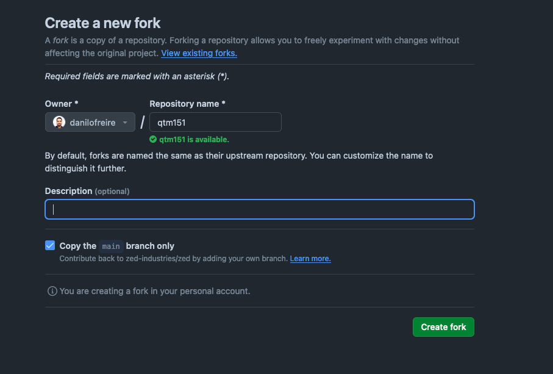
You do this once, at the start of the semester. From then on you pull my updates into your fork and push your own work back to it.
Clone your fork
Forking gave you a copy on GitHub’s servers. Cloning brings that copy onto your computer.
Open your fork on GitHub. Check the URL: it should have your username in it, not mine. Click the green “Code” button. Copy the URL.
Open GitHub Desktop. Click “Clone a Repository from the Internet”.
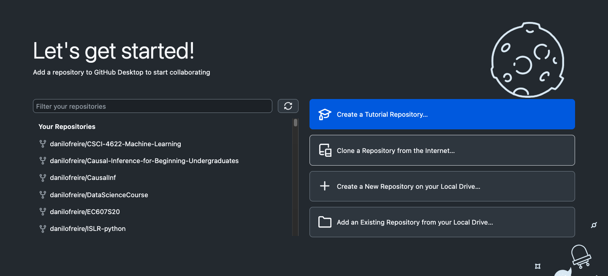
Click the “URL” tab. Paste the URL. Choose where to save the repository on your computer. Click “Clone”.
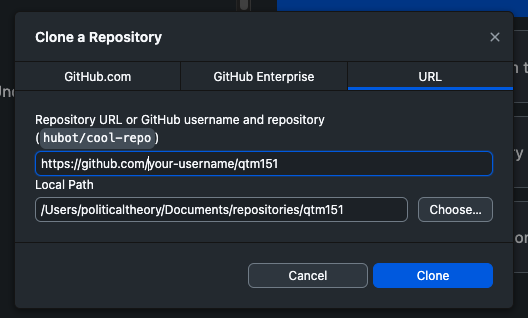
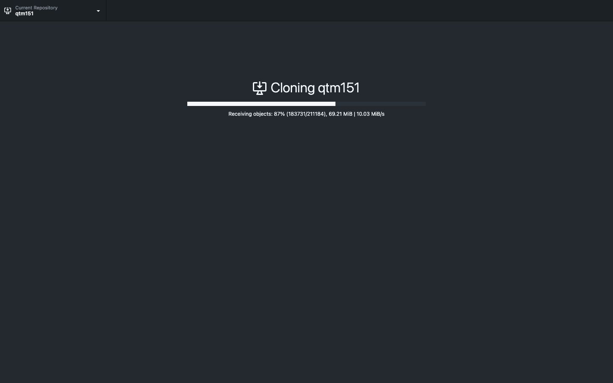
GitHub Desktop then asks how you plan to use the fork. Select “To contribute to the parent project”. Click “Continue”. This is the option that lets you pull my updates later.
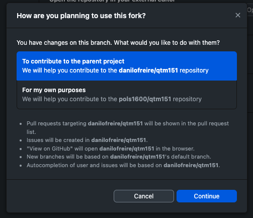
If you pick the other option by mistake, your copy has no link back to my repository and you will never see an update. To fix it: right-click the repository in GitHub Desktop and remove it, delete the folder from your computer, then clone again.
You now have the course materials on your machine. To open them in VS Code, click “Repository” > “Open in Visual Studio Code”.
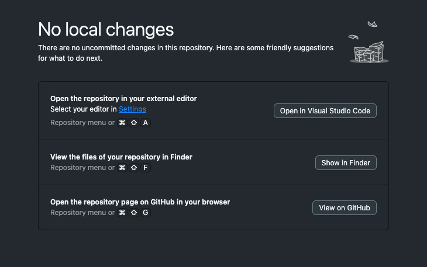
Saving your changes
Git splits saving into two steps. A commit records a set of changes on your computer. A push sends those commits to GitHub. You can commit ten times offline and push once.
Make changes
Edit the files as you normally would. GitHub Desktop notices, and lists every changed file in the “Changes” tab.
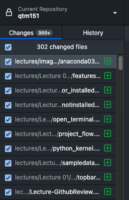
Click a file to see what changed inside it. Green lines are additions, red lines are deletions. The “History” tab shows the same view for every commit made so far.
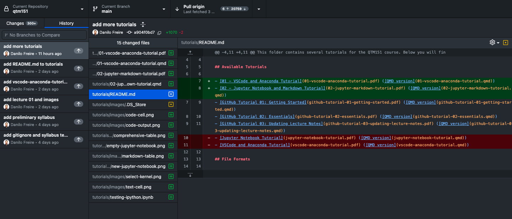
Commit
Write a short summary of what you changed in the “Summary” box. Click “Commit to main”2. That snapshot is now permanent, and you can return to it at any point.
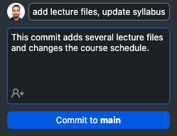
Write summaries you will understand in three weeks. “Fixed question 4 of problem set 2” is useful; “update” is not.
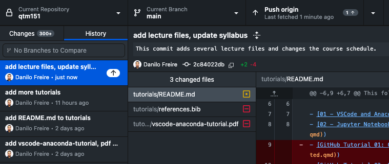
Push
Your commits are still only on your computer. Click “Repository” > “Push” to send them to GitHub.
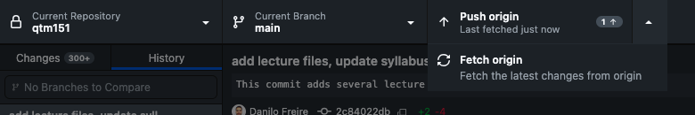
The neighbouring “Fetch” button does the reverse: it downloads changes from GitHub to your computer. The next section puts it to work.
Updating the course materials
I update the course materials regularly during the semester. Pulling those updates into your fork takes one click.
Commit everything you have been working on first. An update with uncommitted changes in the way can fail or overwrite your work.
Open the “Branch” tab in the top menu. Click “Update from upstream/main”. Here “upstream” means my repository, and “main” means its primary version.
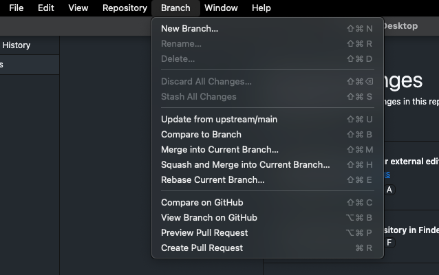
Two habits make this painless:
- Update at the start of every class, so you are working from the current version.
- Save your own work under a different file name. If you write your answers into
assignment-01.qmdand I then update that file, my version replaces yours.assignment-01-danilo.qmdis safe.
Your fork is public by default. To make it private, open your repository on GitHub, click “Settings”, scroll to the “Danger Zone”, click “Make private”, and confirm.
Recommended readings and resources
- GitHub Skills: short interactive courses run inside real repositories. The best starting point.
- GitHub Guides: short written guides to the basics.
- GitHub Desktop documentation: the official reference for the app used here.
- Pro Git: a free book covering Git in full. Read it when you outgrow the app.
- How to Use Git & GitHub Desktop Tutorial for Beginners: a video walkthrough, if you prefer watching to reading.
If anything here does not work, ask me or a teaching assistant. Good luck with your coding!
Footnotes
As a curiosity, the code for the Apollo 11 mission is also available on GitHub.↩︎
The default branch in GitHub is called
main. This is the branch where you will make most of your changes. You can create other branches if you want to work on different features or bug fixes.↩︎